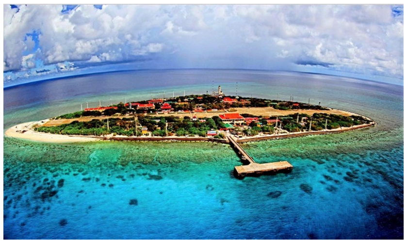
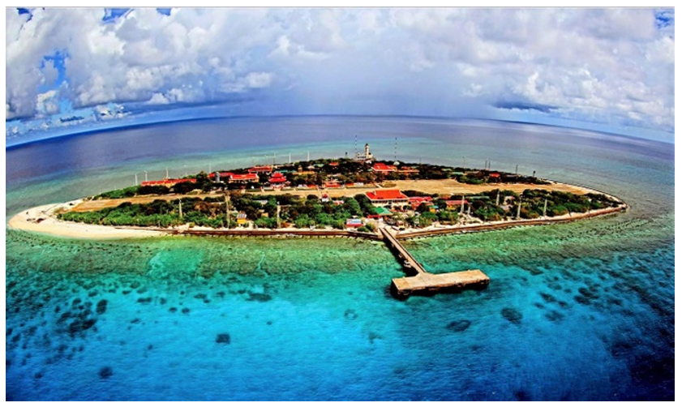
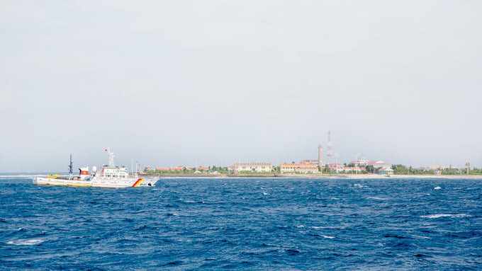
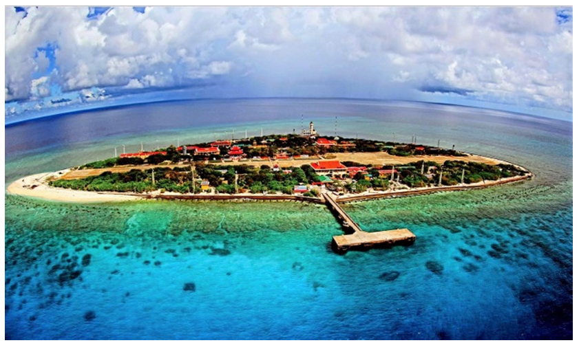
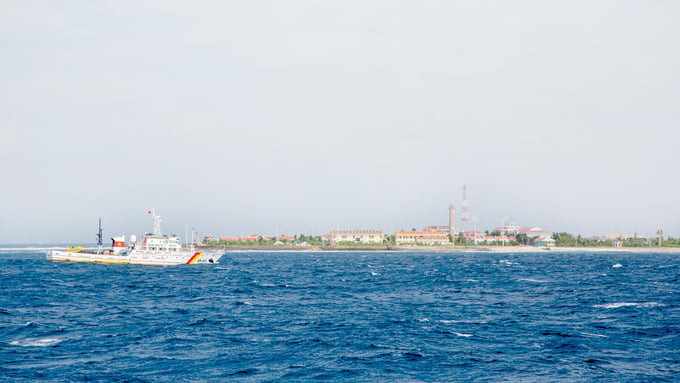
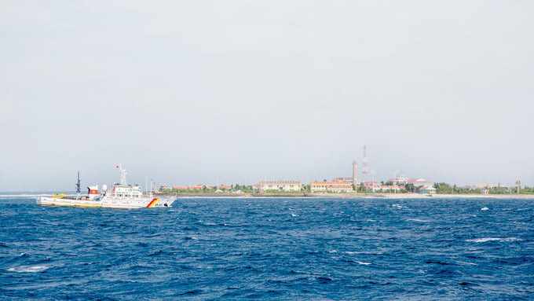
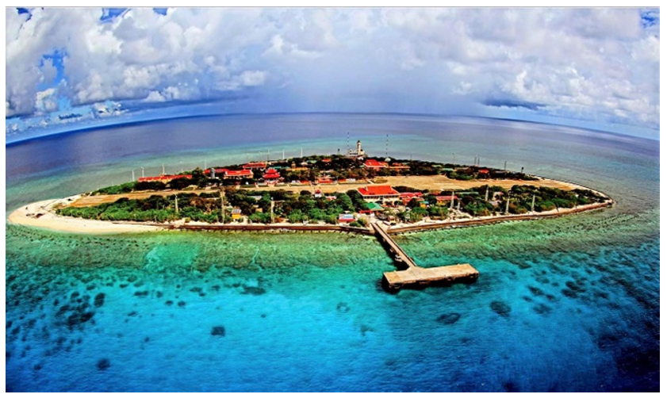
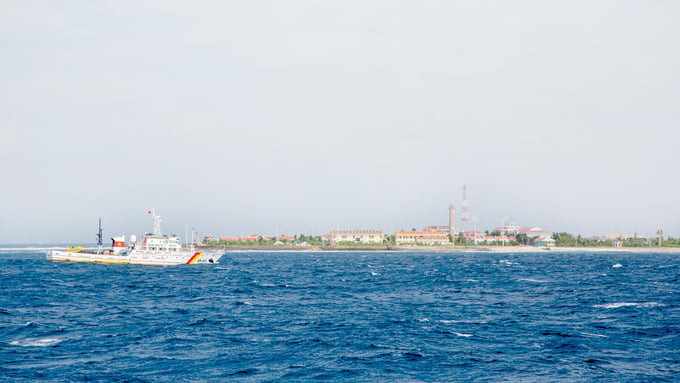

 





Huyện đảo thuộc Đà Nẵng.
Nơi đầu sóng ngọn gió (Khánh Hòa).
Thiên đường nghỉ dưỡng.

Di tích lịch sử oai hùng.
Khu dự trữ sinh quyển thế giới.
Đảo tiền tiêu (Quảng Ngãi).
Lý Sơn
Tri ân hùng binh Hoàng Sa bắc hải.

Ven biển Việt Nam
Thờ cá Ông, cầu mùa màng bội thu.
Khánh Hòa
Tôn vinh nghề khai thác yến.
Nha Trang
Sự kiện du lịch biển tầm cỡ quốc tế.